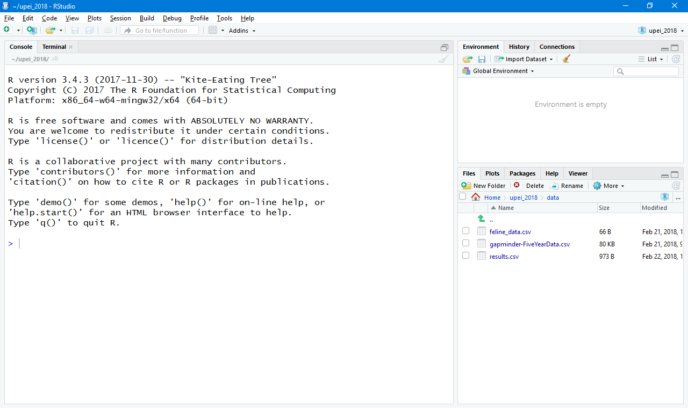
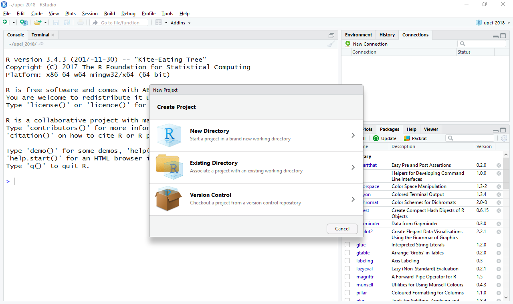
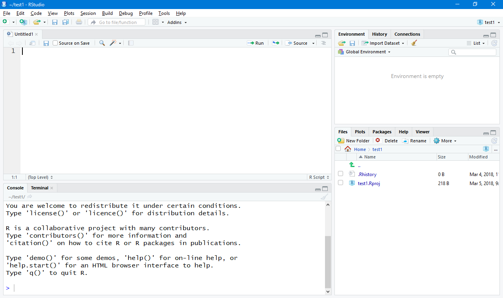
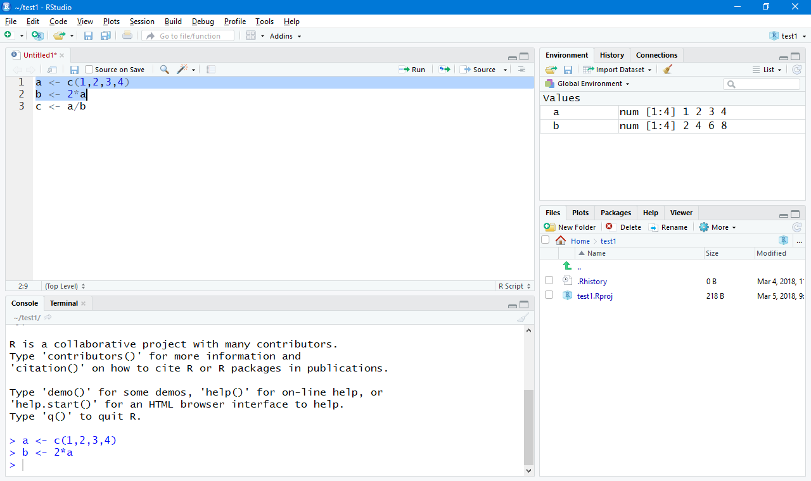
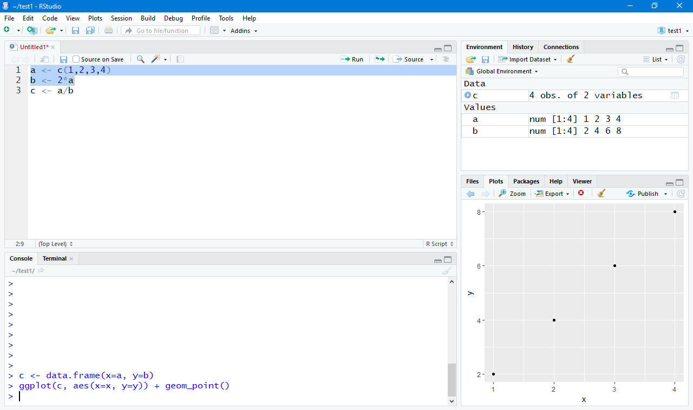

A Good Front-End for R
In the past, I have written pieces on R. R is the defacto statistical package in the Open Source world. It is also fast becoming the default data analysis tool in many scientific disciplines. The core design of R is such that there is a central processing engine that runs your code, with a very simple interface to the outside world. This very simple interface means that it has been easy to build graphical interfaces that wrap the core portion of R, and so there are lots of options out there that you can use as a GUI. This month, we will look at one of the available GUI's, RStudio. RStudio is a commercial program, with a free community version, that is available for Linux, Mac OSX and Windows. So your data analysis work should port easily regardless of the environment you are working in.
For Linux, you can install the main RStudio package by going to the main download page, located at
https://www.rstudio.com/products/rstudio/download/
From here, you can download RPM files for RedHat based distributions or DEB files for Debian based distributions. You would then use either 'rpm' or 'dpkg' to do the installation. For example, in Debian based distributions, you would use the following to install RStudio:
sudo dpkg -i rstudio-xenial-1.1.423-amd64.deb
It is important to note that RStudio is only the GUI interface. This means that you need to install R itself as a separate step. The core parts of R are installed with the command
sudo apt-get install r-base
There is also a community repository of packages available, called CRAN, that can add huge amounts of functionality to R. You will want to install at least some of these in order to have some common tools available. You can install the most common ones with the command
sudo apt-get install r-recommended
There are equivalent commands for RPM based distributions, too. At this point, you should have a complete system to do some data analysis.
When you first start RStudio up, you should get a window that looks somewhat like the following image.

The main pane of the window, on the left-hand side, provides a console interface where you can interact directly with the R session that is running in the backend. The right-hand side is divided into two sections, where each section has multiple tabs available. The default tab in the top section is an environment pane. Here, you will see all of the objects that have been created and currently exist within the current R session. The other two tabs give you the history of every command given, and a list of any connections to external data sources. The bottom pane has five tabs available. The default tab gives you a file listing of the current working directory. The second tab gives you a plot window where any data plots you generate get displayed. The third tab gives you a nicely ordered view into the library system of R. It shows you a list of all of the currently install libraries, along with tools to manage updates and installing new libraries. The fourth tab is the help viewer. R includes a very complete and robust help system that is modeled on what you see in Linux man pages. The last tab is a general viewer pane to view other types of objects.
One part of RStudio that is a great help to people managing multiple areas of research is the ability to use projects. Clicking the menu item "File->New Project..." pops up a new window where you can pick how your new project will exist on the filesystem.

For this article, we will create a new project hosted in a local directory. The file display in the bottom right pane changes to the new directory and you should see a new file named after the project name, with the file name ending '.Rproj'. This file contains the configuration for your new project. While you can interact with the R session directly through the console, this doesn't really lead to easily reproduced workflows. A better solution, especially within a project, is to open a script editor and to write your code within a script file. This way, you automatically have a starting point when you move beyond the development phase of your research. When you click the menu item "File->New File->R Script" opens a new pane in the top left-hand side of the window.

From here, you can now write your R code with all of the standard tools you would expect in a code editor. In order to execute this code that you have written, you have two options available. The first is to simply click the run button in the top right of this editor pane. This will run either the single line where the cursor is located, or an entire block of code that has been previously highlighted.

If you have an entire script file that you want to run as a whole, you can click on the source button in the top right of the editor pane. This is handle in order to reproduce analysis that was done at an earlier time.
The last item to mention is data visualization in RStudio. Actually, the data visualization is handled by other libraries within R. There is a very complete, and complex, graphics ability within the core of R. For normal humans, there are several libraries built on top of this. One of the most popular, and for good reason, is ggplot. If it isn't already installed on your system, you can get it with the command
install.packages(c('ggplot2'))
Once it is installed, you can make a simple scatter plot with the following code.
library(ggplot2) c <- data.frame(x=a, y=b) ggplot(c, aes(x=x, y=y)) + geom_point()
As you can see, ggplot takes dataframes as the data to plot, and you control the display with 'aes()' function calls, and geom function calls. In this case, we used the 'geom_point()' function to say we wanted a scatter plot of points.

The plot then gets generated in the bottom left pane.
Hopefully this short article has exposed you to another tool that is available for your data analysis tasks. There is a lot of other functionality available in RStudio, including a server portion that can be run on a cluster. This allows you to develop code locally and then send it off to a server for the actual processing.